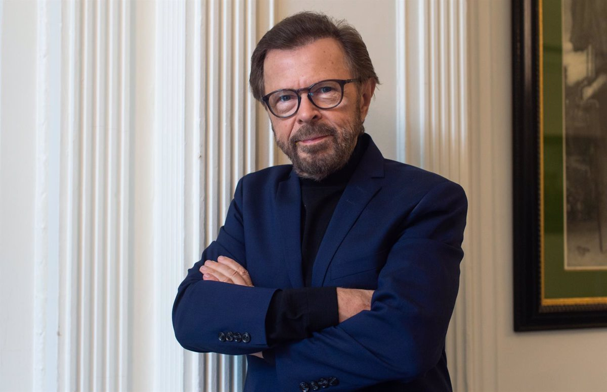
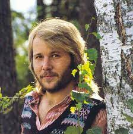
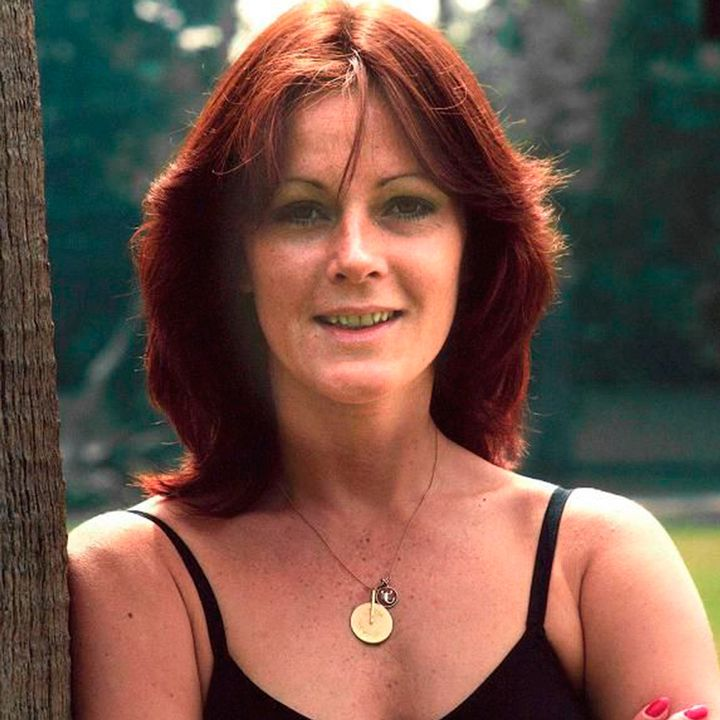
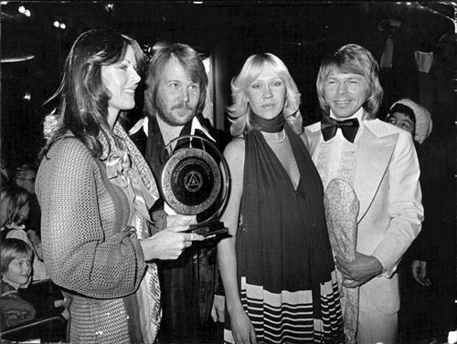

¿QUÉ ES ABBA?
ABBA fue un grupo sueco de música pop, integrado por Benny Andersson, Anni-Frid "Frida" Lyngstad, Björn Ulvaeus y Agnetha Fältskog. El nombre es un acrónimo formado por las primeras letras del nombre de cada miembro (Agnetha, Björn, Benny, Anni-Frid). Björn y Agnetha contrajeron matrimonio meses antes de la formación del cuarteto, mientras que Benny y Frida lo hicieron en 1978; los cuatro lidiaron con sus obligaciones artísticas al mismo tiempo que se ocupaban de sus nuevas familias. Sus grabaciones tuvieron un impacto comercial que los llevó a convertirse en los artistas más exitosos de su compañía discográfica (Universal Music Group) y a ser la banda con más ventas en los años '70. ABBA fue el primer grupo pop europeo en experimentar el éxito en países de habla inglesa fuera de Europa, principalmente Australia, Nueva Zelanda, Sudáfrica, Canadá y en menor medida Estados Unidos. Sin embargo, en la cima de su popularidad, ambos matrimonios se disolvieron y estos cambios se reflejaron en su música, al escribir letras más profundas con un estilo musical diferente. La agrupación experimentó un declive comercial y finalmente decidieron separarse, de modo que en diciembre de 1982 realizaron su última aparición grupo.
UN GRUPO DE MÚSICA, Y DE AMOR
La popular banda surgió de la unión de Agnetha Fältskog, Benny Andersson, Anni-Frid Lyngstad y Björn Ulvaeus. Ellos no sólo compartían la pasión por la música, sino que también sus vidas, ya que Agnetha era esposa de Björn, mientras que Anni-Frid estaba cansada con Benny. El lanzamiento oficial del grupo se dio el 30 de abril de 1972, cuando los cuatro integrantes se presentaron a un programa de televisión para cantar un entonces desconocido tema; People need love.
EL BOOM DE LOS SUECOS
El grupo vio la oportunidad de crecer su fama dentro de los festivales europeos, uno de ellos fue en el de Melodifestivalen, donde ganaron con la puntuación más alta de la historia de esa competición. Tiempo después, ABBA publicó su segundo material discográfico, Waterloo, en el que podemos escuchar temas como Honey, Honey, Hasta Mañana, King Kong Song y Gonna Sing You My Love Song, que alcanzó las principales posiciones de las carteleras musicales de Noruega, Suecia, Finlandia, Finlandia, Alemania, México y Australia. Todo cambiaría para los integrantes de ABBA con la llegada de Dancing Queen, sencillo que inmediatamente se convirtió en un éxito a nivel mundial. En su lanzamiento original, vendió más de tres millones de copias, posicionándose como uno de los favoritos en Alemania, Canadá, Bélgica, España, Estados Unidos e Italia. A pesar de ser superestrellas tanto en Suecia como en el resto del mundo, los miembros de la agrupación no se sentían cómodos con la fama, sobre todo Agnetha, quien fue criada en un ambiente bastante tranquilo. Ésto originó que tuviera ataques de pánico antes de presentarse a un concierto. Los problemas en el matrimonio de Frida y Benny eran cada vez mayores, debido a las constantes infidelidades de éste con diversas mujeres. En una ocasión, la cantante encontró a su esposo en la cama con otra chica, lo que hizo que todo se derrumbara tanto en su vida personal como profesional.
AGNETHA FÄLTSKOG
 Agnetha Åse Fältskog ( 5 de abril de 1950 en Jönköping, Suecia - ) es conocida como parte del grupo ABBA, junto con Björn Ulvaeus, Benny Andersson y Anni-Frid Lyngstad. Crece en una familia de músicos, llegando a componer su primera canción a los 5 años "Två små troll" (dos pequeños trols). A los 16 empezó su carrera como artista, y en 1967 (a los 17 años) llega a la punta del Svensktopper (chart sueco), gracias a su propia composición "Jag var så kär" (Estaba tan enamorada). En 1972 interpretó a la Magdalena en la versión sueca del exitoso musical Jesucristo Superstar. El 6 de julio de 1971, Agnetha contrajo matrimonio con Björn Ulvaeus, con el que tuvo dos hijos, Linda y Christian. En 1978 Björn y Agnetha se separaron, aunque accedieron a permanecer en ABBA, hasta tres años más tarde cuando el grupo se separó.
Agnetha Åse Fältskog ( 5 de abril de 1950 en Jönköping, Suecia - ) es conocida como parte del grupo ABBA, junto con Björn Ulvaeus, Benny Andersson y Anni-Frid Lyngstad. Crece en una familia de músicos, llegando a componer su primera canción a los 5 años "Två små troll" (dos pequeños trols). A los 16 empezó su carrera como artista, y en 1967 (a los 17 años) llega a la punta del Svensktopper (chart sueco), gracias a su propia composición "Jag var så kär" (Estaba tan enamorada). En 1972 interpretó a la Magdalena en la versión sueca del exitoso musical Jesucristo Superstar. El 6 de julio de 1971, Agnetha contrajo matrimonio con Björn Ulvaeus, con el que tuvo dos hijos, Linda y Christian. En 1978 Björn y Agnetha se separaron, aunque accedieron a permanecer en ABBA, hasta tres años más tarde cuando el grupo se separó.
BJÖRN ULVAEUS
Björn Kristian Ulvaeus nació el 25 de Abril de 1945 en Gotenburg. Estudió en la Universidad de Lund y fue el lider del grupo de música folk Hootenenny Singers, que tuvo mucho éxito en Escandinavia. En 1966 una de sus actuaciones estando de gira, conoció a Benny Andersson, teclista de The Hep Stars, con el que surgió rápidamente muy buena amistad ya que ambos sentían verdadera pasión por escribir e interpretar música. Aquel mismo verano ya comenzaron a escribir canciones juntos que interpretaban en sus respectivos grupos. En las grabaciones de estudio, normalmente se apoyaban mutuamente colaborando como pianista o guitarrista para el grupo de su amigo. Björn continuó grabando y actuando con Hootenanny Singers con gran éxito, a la vez que trabajaba en su casa como productor de Polar Record Company, cuyo dueño Stig Anderson, con el tiempo se convertiría en el manager de Benny & Björn. Continuaron componiendo y produciendo juntos para otros artistas. El 6 de Julio de 1971, Björn se casó con Agnetha Fältskog, con la que tuvo dos hijos, Linda /1973), y Peter Christian (1977). Se divorciaron en 1980, aunque siguieron trabajando como ABBA. Björn se casó en 1981 con la periodista musical Lena Kallersjö, con la que tuvo dos hijos también Emma (1982) y Anna (1986).
BENNY ANDERSSON
Göran Bror Benny Andersson nació el 16 de diciembre de 1946, en Estocolmo, Suecia. Su base musical vino de su padre y su abuelo y ellos difrutaban verlo a Benny tocar el acordeón y a los 6 años, Benny ya tenía uno. Su padre y su abuelo le enseñaron música folk sueca y música tradicional. A los 10 años tuvo su propio piano y el mismo aprendió solo a tocar. Dejó la escuela a los 15 años y comenzó a tocar en clubs. Sus influencias juveniles fueron Phil Spector, The Beach Boys, The Beatles y Elvis Presley. En 1964 formó el grupo The Hep Stars, que duró hasta 1969, y que fueran conocidos como los Beatles suecos. Benny se consolidaba como la fuerza de ese grupo y allí pronto comenzó a escribir su propio material. Al respecto, en el documental "SUPER TROUPERS", Benny señaló sobre esas primeras épocas: "Seis meses después compuse 'Sunny Girl' y tuve una buena sensación, 'Es una buena canción', me dio esa sensación. Sentí que pasaba algo. La grabamos y tuvo mucho éxito. El día que llegó al número 1 en las listas, salida de la nada, me di cuenta y me lo dije a mí mismo de que podía componer un buen tema relacionado con lo que hacía, sería capaz de componer dos. Y si hacía dos, podía hacer tres. Entonces decidí lo que quería hacer y ni ha cambiado desde entonces".
ANNI-FRID LYNGSTAD
Anni-Frid Lyngstad (1945) es una cantante, compositora y ecologista sueca que formó parte del famoso grupo sueco de pop ABBA, creado en 1972 en Estocolmo. Se la conoce también como Frida y, por su matrimonio con el príncipe Heinrich Ruzo Reuss von Plauen en 1992, princesa Anni-Frid Reuss von Plauen. Aunque lanzó varios sencillos y su álbum Frida, fue la creación de ABBA la que le dio reconocimiento. El éxito del grupo fue tal que lograron vender más de 380 millones entre álbumes y singles. Después de la ruptura del grupo, Anni-Frid grabó un par de álbumes más con un éxito relativo, y en 1996 se retiró de la música. Frida fue simpatizante del Partido Moderado de Suecia y tuvo algunos problemas en la década de 1980, cuando quiso aparecer en un anuncio de la Asociación de Empleadores de Suecia. En 2013, Lyngstad ayudó con la creación de ABBA: el museo, que abrió sus puertas en Estocolmo. En 2014, muchos fans del grupo creyeron que volverían a reunirse de nuevo debido a que se cumplían 40 años desde que nació la banda, pero esto nunca llegó a ocurrir. En 2014, Anni-Frid publicó su autobiografía. En 2017 fue a Torshälla para reclamar un premio que le fue concedido, el Eskilstuna Music Prize.
El grupo sueco, durante toda su carrera musical, ha sido galardonado con muchos premios, tanto a nivel nacional, internacional e incluso mundial. Si tuvieramos que nombrar todos los premios uno a uno, nunca acabariamos, pero si vamos a nombrar los más importantes o los que sus fnas consideran fundamentales:
- El primer premio oficial que ganaron fue en el año 1993, recibiendo el título llamado WORLD MUSIC AWARD AL ARTISTA SUECO CON MÁS VENTAS A NIVEL MUNDIAL, ceremonia celebrada en el Casino de Montecarlo, en Mónaco.
- En el año 1993, gracias a su gran éxito en Eurovisión, también recibieron el GRAMMY HONOR AWARD.
- En el año 2006, recibieron su tercer premio oficial, llamado GRAMMY AWARD FOR MUSIC DVD OF THE YEAR
